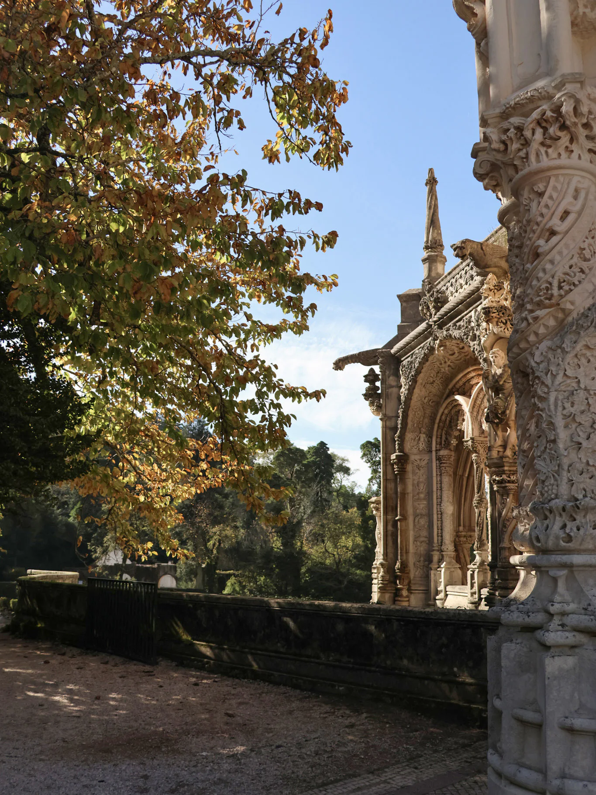

Narrativas completas e honestas, da manhã lenta à pista cheia. Presença discreta, direção apenas quando é precisa e todas as pequenas coisas no meio.
Fotografia documental · Pombal, Leiria
O instante antes de partir.
Fotografo o que se sente antes de se explicar — pessoas, afetos e marcas com verdade, presença e um pouco de sal na pele.
Explorar histórias ↓PORTFÓLIO / MMXXVI

Retrato✦Casamentos✦Marcas✦Famílias✦
✦✦✦✦
01 / Manifesto
Não procuro poses perfeitas. Procuro o vento no cabelo, as mãos inquietas, o riso que chega sem avisar.
A minha fotografia nasce da observação e da confiança. Interfiro pouco, sinto muito e guardo aquilo que o tempo, sozinho, levaria.
Beatriz02 / Histórias escolhidas
Trabalho
recente
Uma seleção de pessoas e lugares.
03 / O que faço
Histórias feitas
à vossa medida.
Cada sessão começa numa conversa. O resto é espaço, tempo e luz para que possam simplesmente estar.
Para guardar uma fase, celebrar quem são agora ou ter finalmente uma fotografia onde todos cabem — sem poses rígidas nem sorrisos pedidos.
Imagens com matéria e intenção para marcas humanas, artistas e projetos independentes. Do conceito à produção, com uma linguagem visual coerente.
04 / Como funciona
Do primeiro contacto
à galeria privada.
- 01
Conversa
Contas-me o que imaginas: a data, o local, as pessoas e o tipo de sessão.
- 02
Confirmação
Confirmo a disponibilidade e combinamos os detalhes e os próximos passos.
- 03
Sessão
Uma presença calma e atenta, com direção apenas quando é precisa.
- 04
Galeria privada
As fotografias chegam numa galeria protegida por código, onde as podes ver, guardar favoritas e descarregar.
Fotógrafa, observadora,colecionadora de luz.
05 / Atrás da câmara
Olá, sou
a Beatriz.
Sou de Pombal, Leiria, e fotografo pessoas como quem guarda pequenas provas de que a vida aconteceu mesmo ali.
Fotografo profissionalmente desde 2022. Gosto de imagens com verdade: uma mão inquieta, um abraço fora de tempo, a luz a entrar sem pedir licença. Trabalho casamentos, retratos, famílias e marcas com uma presença calma, próxima e atenta ao que muitas vezes passa despercebido.
A Fotografia Arnaut nasce desse olhar: simples, emocional e cuidado. Trabalho a partir de Pombal, Leiria, para contar histórias que merecem ficar.
Falar comigo ↗06 / Informação útil
Perguntas
frequentes.
Respostas breves às dúvidas mais comuns. Para informações específicas, fala comigo.
07 / Vamos falar
Há uma história
à espera de ser
guardada?
Conta-me o que tens em mente, onde e quando.
Responderei assim que possível.